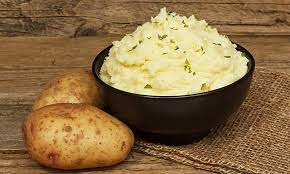

What It's About:
Shepherd's pie has got to be one of my favorite comfort foods. There's just something so great about a simple dish containing just the necessary components; nothing overly fancy needed for a good shepherd's pie (although there are some pretty pretentious recipes out there).
What's In It:
Here's what you'll need to get started:
- 1 pound of ground beef (as lean as you can get)
- 2 cups of mashed potatoes (if you can't make beautiful scratch-built potatoes, store-bought is fine)
- 1 cup of diced carrots
- 1 cup of peas (frozen is fine)
- 1 1/2 teaspoons of salt
- 1 1/2 teaspoons of ground pepper
- 1 teaspoon of garlic powder (just a suggestion, you measure that shit with your heart)
- 1 tablespoon of milk
- 1 tablespoon of flour
- 1 cup of shredded cheddar cheese (optional topping)
- 1/2 cup of chives (optional topping)
- 1 teaspoon of paprika (optional topping)
Here's What You Need To Do:
Cook your mashed potatoes
If you've got the time, I highly recommend making these mashed potatoes. This can be a tall order, so store-bought is fine as well. Just whip them up by the instructions on the box and set them aside. Don't worry about them cooling, you're going to be baking that shit right back up in a bit.
Cook your ground beef

Cook your ground beef over medium-high heat, draining the grease when done. Add the salt, pepper, and garlic powder and stir over medium-low heat for a couple more minutes, then add the milk and flour. Simmer over medium-low heat until the gravy thickens.
Assemble your pie
Cook it!
Once the gravy has the consistency you want, stir in the peas and carrots.

Dump your pan of beef into the bottom of a glass or ceramic baking dish. Scoop your mashed potatoes on top of the ground beef and spread evenly. You'll want to use a fork or spoon to make a pattern or design in the top layer of the potatoes, creating thin little peaks will create a crispy little topping.


Toss your pie into an over set at 350 degrees for about 15 min, or until the potatoes are golden brown. You can't really cook it too little, everything inside is already cooked.